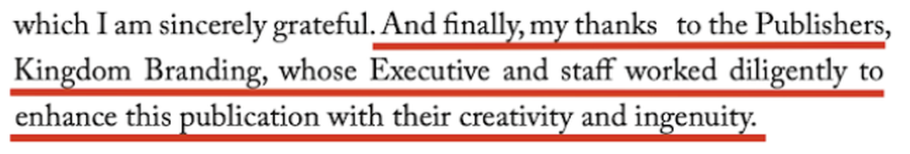

Delivering a client’s autobiography to market in print and digital formats. As Project Manager, I owned the full publishing cycle: defining scope and creative direction with the author, running approval-gated production from cover design to ISBN generation and distribution, and validating quality before publication. The book is available on Amazon.
Objective and scope
Manage and deliver the complete publishing process for the client’s book, ensuring a cohesive, professional final product across print and digital formats.
The scope covered the full publishing cycle: book cover design, print layout, e-book conversion, ISBN generation, and global e-book distribution.
My role
- Owned the full publishing cycle as Project Manager, from scope definition through distribution.
- Defined scope, objectives, and creative direction with the client.
- Coordinated between the design and layout teams to keep production flowing and standards consistent.
- Kept the client closely involved, with feedback and formal approval at every stage.
- Validated print and digital outputs before publication.
Initiation
I opened the project by defining scope, objectives, and creative direction with the client, with a focus on design integrity and a smooth production flow across multiple teams. Three documents set the foundation:
- Project charter: the publishing objectives, scope, and key deliverables.
- Stakeholder register: the client (author), me as Project Manager, and the design team.
- Risk register: formatting inconsistencies, delayed ISBN registration, and platform submission errors, each with mitigation steps.
Execution
Production ran in structured, approval-based stages. At each phase the client provided feedback and formal approval before the next stage began, which kept the process transparent and protected the author’s vision.
- Final cover designCreated and approved by the client.
- First chapter layoutDeveloped as a design benchmark for the full book.
- Spine and back coverDesigned and approved.
- Full print layoutCompleted for the print edition.
- E-book conversionConverted into multiple formats.
- ISBN and distributionISBN generated and distribution set up across major digital platforms.
Monitoring and quality control
I maintained close communication with the client to review deliverables and coordinated between the design and layout teams to meet production standards. Each step was validated through test outputs for both print and digital versions, confirming accuracy in layout, typography, and formatting.
- Proofing and formatting checks before final submission.
- Review of e-book conversions for compatibility across multiple devices.
- Validation of ISBN and distribution readiness before publication.
Deliverables managed
- Final book cover design (front, spine, and back)
- Print-ready interior layout
- Converted and tested e-book files
- Generated ISBN
- E-book distributed on major platforms
Outcome and impact
The project was completed successfully and fully approved by the client.
- A polished, market-ready book delivered across print and digital formats.
- A smooth publishing experience from concept to completion.
- High client satisfaction: the author credited Kingdom Branding’s executive and staff in the book’s published acknowledgments (page iv).
Reference
